目录
- Methods Overview
- Distillation
- Quantization Challenges for Transformer Quantization Post-training quantization (PTQ) Mixed-precision quantization Quantization at fine-grained granularity Second order information for quantization Outlier smoothing Quantization-aware training (QAT)
- Pruning How to prune? How to retrain?
- Sparsity N:M Sparsity via Pruning Sparsified Transformer Mixture-of-Experts Routing Strategy Improvement Kernel Improvement
- Architectural Optimization Sparse Attention Patterns Recurrence Memory Saving Designs Adaptive Attention
- Citation
- References
[2023-01-24 更新：新增一小节关于蒸馏的内容。]
大型 Transformer 模型如今已成为主流，在各种任务上取得了最先进的结果。它们功能强大，但在训练和使用时成本极高。极高的推理成本（包括时间和内存）是采用强大 Transformer 大规模解决现实世界任务的主要瓶颈。
为什么大型 Transformer 模型的推理如此困难？除了最先进模型规模不断增大外，还有两个主要因素导致推理挑战（Pope et al. 2022）：
- Large memory footprint. Both model parameters and intermediate states are needed in memory at inference time. For example, The KV cache should be stored in memory during decoding time; E.g. For a batch size of 512 and context length of 2048, the KV cache totals 3TB, that is 3x the model size (!). Inference cost from the attention mechanism scales quadratically with input sequence length.
- Low parallelizability. Inference generation is executed in an autoregressive fashion, making the decoding process hard to parallel.
本文将介绍几种使 Transformer 推理更高效的方法。其中一些是通用的网络压缩方法，另一些则是针对 Transformer 架构专门设计的。
方法概览
我们通常将以下几点作为模型推理优化的目标：
- 通过使用更少的 GPU 设备和更少的 GPU 内存来减少模型的内存占用；
- 通过降低所需的 FLOPs 数量来减少计算复杂度；
- 降低推理延迟并加快运行速度。
有多种方法可以使推理在内存上更节省或在时间上更快。
- 应用各种并行策略，在大量 GPU 上扩展模型。对模型组件和数据的智能并行化，使得运行万亿参数模型成为可能。
- 内存卸载：将临时不使用的数据卸载到 CPU，需要时再读回。这有助于内存使用，但会增加延迟。
- 智能批处理策略；例如 EffectiveTransformer 将连续序列打包在一起，以去除一个批次内的 padding。
- 网络压缩技术，如剪枝、量化、蒸馏。更小规模的模型（参数量或位宽方面）需要更少的内存且运行更快。
- 针对目标模型架构的特定改进。许多架构改动，尤其是注意力层的改动，有助于提升 Transformer 解码速度。
请查阅，其中介绍了不同类型的训练并行化和内存节省设计，包括 CPU 内存卸载。本文重点关注网络压缩技术和针对 Transformer 模型的架构特定改进。如何在多个 GPU 上训练超大规模模型？
蒸馏
知识蒸馏（KD；Hinton et al. 2015，Gou et al. 2020）是一种直接的方法，通过将预训练的大型昂贵模型（“教师模型”）的知识迁移到更小、更廉价的模型（“学生模型”）中，从而加速推理。对学生模型的架构构建没有太多限制，只需确保输出空间与教师模型匹配，以便构建合适的学习目标。

给定一个数据集，学生模型通过蒸馏损失来模仿教师模型的输出。通常神经网络有一个 softmax 层；例如，LLM 会输出一个关于 token 的概率分布。我们将 softmax 之前的 logits 层分别记为教师模型的 \mathbf{z}_t 和学生模型的 \mathbf{z}_s。蒸馏损失使用较高的温度 T 来最小化两个 softmax 输出之间的差异。当已知真实标签 \mathbf{y} 时，我们可以将其与学生模型的 soft logits 之间的监督学习目标（例如交叉熵）结合使用。
其中 \lambda 是用于平衡 soft 和 hard 学习目标的超参数。\mathcal{L}_\text{distll} 的常见选择是 KL 散度 / 交叉熵。
一个成功的早期尝试是 DistilBERT（Sanh et al. 2019），它能够将 BERT 的参数减少 40%，同时在微调的下游任务上保持 BERT 97% 的性能，并且运行速度提升 71%。DistilBERT 预训练的损失是 soft 蒸馏损失、监督训练损失（即 BERT 情况下的通用语言模型 \mathcal{L}_\text{MLM}）以及一种特殊的余弦嵌入损失（用于对齐教师和学生的隐藏状态向量）的组合。
蒸馏可以很容易地与量化、剪枝或稀疏化技术结合使用，其中教师模型是原始的全精度稠密模型，而学生模型经过量化、剪枝或修剪以获得更高的稀疏度。
量化
对深度神经网络应用量化有两种常见方法：
- 训练后量化（PTQ）：模型首先训练至收敛，然后将其权重转换为更低精度，无需额外训练。与训练相比，它通常实现成本很低。
- 量化感知训练（QAT）：在预训练或进一步微调过程中应用量化。QAT 能够获得更好的性能，但需要额外的计算资源和具有代表性的训练数据。
我们应该意识到理论上的最优量化策略与硬件内核支持之间存在差距。由于 GPU 内核对某些类型的矩阵乘法（例如 INT4 x FP16）缺乏支持，并非下面所有方法都能在实际推理中带来速度提升。
Transformer 量化的挑战
许多关于 Transformer 模型量化的研究都观察到相同现象：简单的低精度（例如 8-bit）训练后量化会导致显著的性能下降，主要原因是激活值的动态范围很高，而朴素的激活量化策略无法保持模型容量。
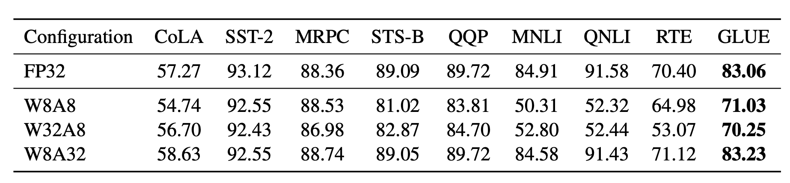
Bondarenko et al. (2021) 在一个小型 BERT 模型中观察到，由于输出张量中存在强离群值，FFN 的输入和输出的动态范围差异很大。因此，对 FFN 的残差求和进行 per-tensor 量化很可能导致显著误差。
随着模型规模增长到数十亿参数，高幅值的离群特征开始在所有 Transformer 层中出现，导致简单的低比特量化失败。Dettmers et al. (2022) 在参数量超过 6.7B 的 OPT 模型中观察到了这种现象。更大型的模型有更多层出现极端离群值，这些离群特征对模型性能有显著影响。少数维度中激活离群值的尺度可比其他大多数值大 ~100 倍。
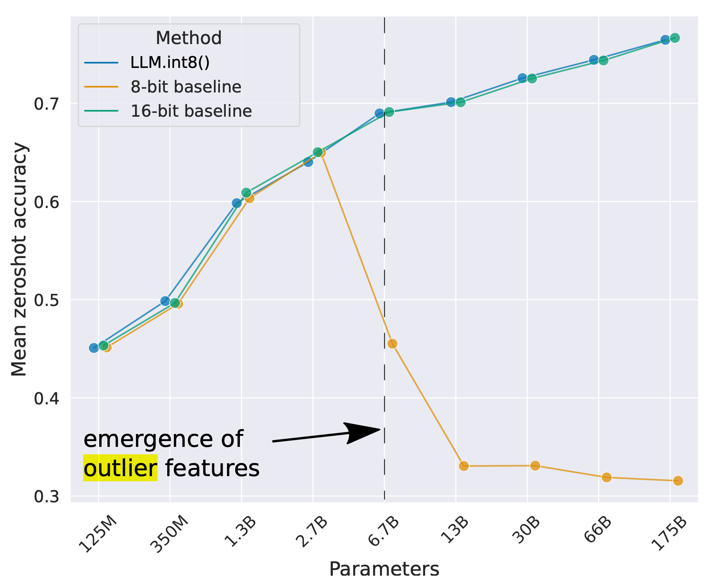
训练后量化 (PTQ)
混合精度量化
解决上述量化问题最直接的方法是对权重和激活采用不同精度进行量化。
GOBO（Zadeh et al. 2020）是最早对 Transformer（即小型 BERT 模型）应用训练后量化的模型之一。它假设每层的模型权重服从高斯分布，因此通过跟踪每层的均值和标准差来检测离群值。离群特征保持原始形式，而其他值被分成多个 bin，仅存储权重的对应 bin 索引和质心值。
基于 BERT 中只有某些激活层（例如 FFN 后的残差连接）会导致较大性能下降的观察，Bondarenko et al. (2021) 采用了混合精度量化：在有问题的激活上使用 16-bit 量化，而其他激活使用 8-bit。
LLM.int8()（Dettmers et al. 2022）中的混合精度量化通过两种混合精度分解实现：
- 因为矩阵乘法包含一组独立的行向量与列向量之间的内积，我们可以对每个内积施加独立的量化：每行和每列都按绝对最大值进行缩放，然后量化为 INT8。
- 离群激活特征（例如比其他维度大 20 倍）保持为 FP16，但它们仅占总权重的很小一部分。如何识别离群值是经验性的。
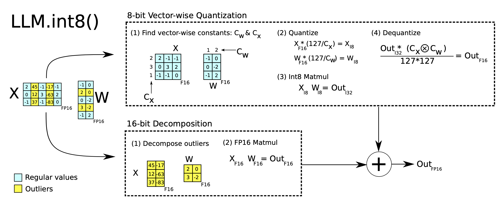
细粒度量化

朴素地将整个一层权重矩阵进行量化（“per-tensor” 或 “per-layer” 量化）最容易实现，但无法获得良好的量化粒度。
Q-BERT（Shen, Dong & Ye, et al. 2020）对微调后的 BERT 模型应用了 group-wise 量化，将 MHSA（多头自注意力）中每个 head 对应的单个矩阵 W 视为一个组，然后应用基于 Hessian 的混合精度量化。
基于观察到离群值仅出现在 d（隐藏状态 / 模型大小）维度中的少数几个，Bondarenko et al. 2021 提出了 per-embedding group (PEG) 激活量化。Per-embedding 计算成本很高。相比之下，PEG 量化将激活张量沿嵌入维度分成若干大小均匀的组，同一组内的元素共享量化参数。为了确保所有离群值被分到同一组，他们对嵌入维度应用确定性的基于范围的置换，按照数值范围对维度进行排序。
ZeroQuant（Yao et al. 2022）对权重使用与 Q-BERT 相同的 group-wise 量化，对激活使用 token-wise 量化。为了避免昂贵的量化与反量化计算，ZeroQuant 构建了定制内核，将量化操作与其前一个算子融合。
用于量化的二阶信息
Q-BERT（Shen, Dong & Ye, et al. 2020）为其混合精度量化开发了 Hessian Aware Quantization (HAWQ)。其动机是具有更高 Hessian 谱（即更大的 top 特征值）的参数对量化更敏感，因此需要更高的精度。这本质上是一种识别离群值的方法。
从另一个角度看，量化问题是一个优化问题。给定权重矩阵 \mathbf{W} 和输入矩阵 \mathbf{X}，我们希望找到量化的权重矩阵 \hat{\mathbf{W}} 以最小化 MSE：
GPTQ（Frantar et al. 2022）将权重矩阵 \mathbf{W} 视为行向量 {\mathbf{w}} 的集合，并对每一行独立应用量化。GPTQ 迭代地对更多贪心选择的权重进行量化，以最小化量化误差。对所选权重的更新有闭式公式，利用 Hessian 矩阵。如果感兴趣，可阅读论文及 OBQ（Optimal Brain Quantization；Frantar & Alistarh 2022）方法的更多细节。GPTQ 可将 OPT-175B 的权重位宽降低到 3 或 4 bit 而不会造成太大性能损失，但它仅适用于模型权重，不适用于激活。
离群值平滑
众所周知，在 Transformer 模型中，激活比权重更难量化。SmoothQuant（Xiao & Lin 2022）提出了一种巧妙的解决方案，通过数学等价变换将激活中的离群特征平滑转移到权重上，从而实现对权重和激活的同时量化（W8A8）。因此，SmoothQuant 比混合精度量化具有更好的硬件效率。

考虑 per-channel 的平滑因子 \mathbf{s}，SmoothQuant 按以下方式对权重进行缩放：
平滑因子可以很容易地离线融合到前一层的参数中。超参数 \alpha 控制我们将量化难度从激活迁移到权重的程度：\mathbf{s} = \max (\vert \mathbf{X}_j \vert)^\alpha / \max( \vert \mathbf{W}_j \vert )^{1-\alpha}。论文发现 \alpha=0.5 是许多 LLM 实验中的甜点。对于激活中离群值更显著的模型，\alpha 可以调得更大。
量化感知训练 (QAT)
量化感知训练将量化操作融合到预训练或微调过程中。它直接学习低比特表示的模型权重，以额外训练时间和计算为代价，获得更好的性能。
最直接的方法是在与预训练数据集相同或具有代表性的训练数据集上，对量化后的模型进行微调。训练目标可以与预训练目标相同（例如通用语言模型训练中的 NLL/MLM），也可以是针对我们关心的下游任务的特定目标（例如分类的交叉熵）。
另一种方法是将全精度模型视为教师，将低精度模型视为学生，然后使用蒸馏损失来优化低精度模型。蒸馏通常不需要使用原始数据集；例如，Wikipedia 数据集是一个不错的选择，甚至随机 token 也能带来不错的性能提升。逐层知识蒸馏（LKD；Yao et al. 2022）方法逐层量化网络，并使用其原始未量化的版本作为教师模型。在相同输入下，LKD 最小化使用层权重相乘的结果与使用量化层权重相乘的结果之间的 MSE。
剪枝
网络剪枝是通过修剪不重要的模型权重或连接来减小模型大小，同时保持模型容量。它可能需要也可能不需要重训练。剪枝可以是非结构化的或结构化的。
- 非结构化剪枝允许丢弃任意权重或连接，因此不会保留原始网络架构。非结构化剪枝通常与现代硬件不兼容，也不会带来实际的推理加速。
- 结构化剪枝旨在保持稠密矩阵乘法的形式，只是其中部分元素为零。它们可能需要遵循一定的模式限制，以适配硬件内核支持。本文重点关注结构化剪枝，以在 Transformer 模型中实现高稀疏度。
构建剪枝网络的常规工作流程包括三个步骤：
- 训练一个稠密网络直至收敛；
- 对网络进行剪枝，移除不需要的结构；
- 可选地重训练网络，使用新的权重恢复性能。
通过网络剪枝在稠密模型中发现稀疏结构，同时稀疏网络仍能保持相似性能，这一想法的灵感来自深度神经网络是否存在严重过拟合？（LTH）：一个随机初始化的稠密前馈网络包含一群子网络，其中只有一部分（一个稀疏网络）是“中奖彩票”，当单独训练时能达到最优性能。
如何剪枝？
幅度剪枝是最简单但相当有效的剪枝方法——修剪绝对值最小的权重。事实上，一些研究（Gale et al. 2019）发现，简单的幅度剪枝方法可以达到与复杂剪枝方法相当或更好的结果，例如变分 dropout（Molchanov et al. 2017）和 l_0 正则化（Louizos et al. 2017）。幅度剪枝易于应用于大型模型，并且在广泛的超参数范围内能获得相当一致的性能。
Zhu & Gupta (2017) 发现大型稀疏模型能够超越其小型但稠密的对应模型。他们提出了 Gradual Magnitude Pruning (GMP) 算法，在训练过程中逐步增加网络的稀疏度。在每个训练步骤中，将绝对值最小的权重掩码为零，以达到期望的稀疏度 s，且被掩码的权重在反向传播期间不更新梯度。期望的稀疏度 s 随着更多训练步骤而增加。GMP 过程对学习率调度很敏感，其学习率应高于稠密网络训练所用的水平，但也不能太高以免无法收敛。
迭代剪枝（Renda et al. 2020）多次迭代第 2 步（剪枝）和第 3 步（重训练）：每次迭代只剪枝一小部分权重，然后对模型进行重训练。该过程重复直到达到期望的稀疏度。
如何重训练？
重训练步骤可以是使用相同预训练数据或其他任务特定数据集的简单微调。
深度神经网络是否存在严重过拟合？ 提出了一种权重回退重训练技术：在剪枝后，将未剪枝的权重重新初始化为训练早期时的原始值，然后使用相同的学习率调度进行重训练。
学习率回退（Renda et al. 2020）仅将学习率重置为其早期值，而未剪枝的权重自上次训练结束以来保持不变。他们观察到：（1）使用权重回退的重训练在各种网络和数据集上均优于使用微调的重训练；（2）在所有测试场景中，学习率回退与权重回退相当或优于它。
稀疏性
稀疏性是在保持模型推理计算高效的同时扩展模型容量的一种有效方式。这里我们考虑 Transformer 的两种稀疏类型：
- 稀疏化的稠密层，包括自注意力和 FFN 层。
- 稀疏模型架构；即通过引入 Mixture-of-Experts (MoE) 组件。
通过剪枝实现 N:M 稀疏
N:M 稀疏是一种结构化稀疏模式，与现代 GPU 硬件优化兼容，其中每 M 个连续元素中有 N 个为零。例如，Nvidia A100 GPU 的稀疏张量核心支持 2:4 稀疏以实现更快的推理（Nvidia 2020）。

为了将稠密神经网络稀疏化为遵循 N:M 结构化稀疏模式，Nvidia (2020) 建议使用训练剪枝网络的三步常规流程：训练 → 剪枝以满足 2:4 稀疏 → 重训练。
对列进行置换可以在剪枝过程中提供更多选项，以保留大幅值参数或满足 N:M 稀疏等特殊限制（Pool & Yu 2021）。只要两个矩阵的配对轴按相同顺序置换，矩阵乘法的结果就不会改变。例如，
（1）在自注意力模块中，如果对 query 嵌入矩阵 \mathbf{Q} 的第 1 轴和 key 嵌入矩阵 \mathbf{K}^\top 的第 0 轴应用相同的置换顺序，则 \mathbf{Q}\mathbf{K}^\top 的矩阵乘法最终结果将保持不变。
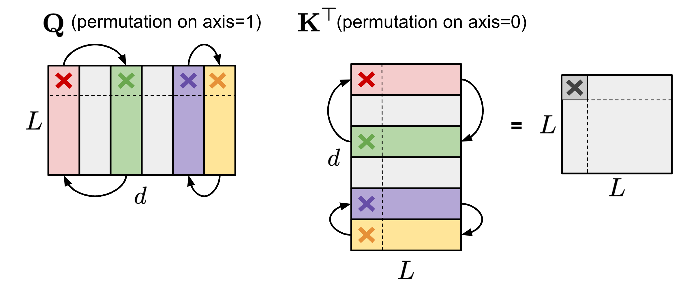
（2）在包含两个 MLP 层和一个 ReLU 非线性层的 FFN 层中，我们可以按相同顺序对第一个线性权重矩阵 \mathbf{W}_1 的第 1 轴和第二个线性权重矩阵 \mathbf{W}_2 的第 0 轴进行置换。
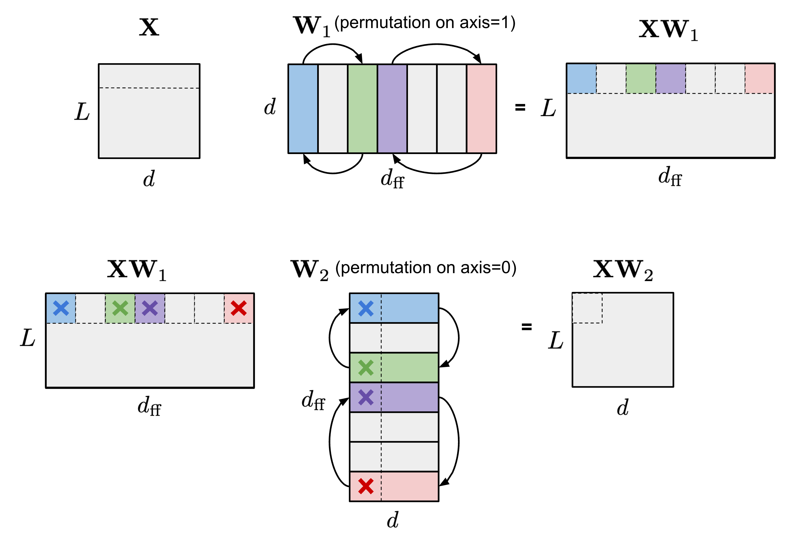
为了强制执行 N:M 结构化稀疏，我们将一个矩阵的列分割成多个由 M 列组成的“条带”（stripe），可以很容易观察到，每个条带内列的顺序和条带本身的顺序对 N:M 稀疏约束没有影响。
Pool & Yu (2021) 提出了一种迭代贪心算法，来寻找能最大化 N:M 稀疏下权重幅度的最优置换。所有通道对都被推测性地交换，只有导致幅度增幅最大的交换会被采用，从而生成新的置换并完成一次迭代。贪心算法可能只能找到局部最优，因此他们引入了两种技术来跳出局部最优：
- 有界回归：在实践中随机交换两个通道，最多固定次数。解搜索被限制在一个通道交换的深度，以保持搜索空间宽而浅。
- 窄而深的搜索：选择多个条带并同时对其进行优化。
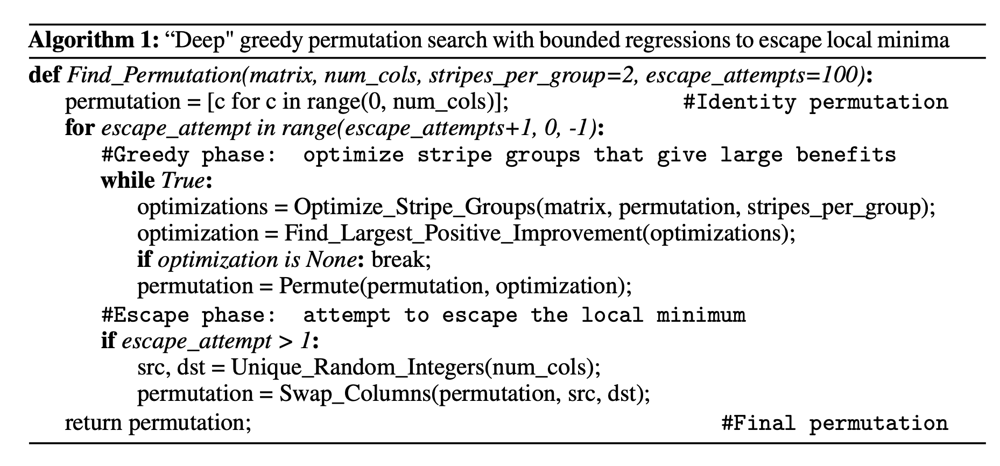
如果网络在剪枝前先进行置换，则能获得比按默认通道顺序剪枝更好的性能。
为了从零开始训练具有 N:M 稀疏的模型，Zhou & Ma, et al. (2021) 将 STE（Straight-Through Estimator；Bengio et al. 2013）——常用于模型量化中的反向传播更新——扩展到幅度剪枝和稀疏参数更新。
STE 计算稠密参数关于剪枝网络 \widetilde{W}、\partial \mathcal{L}/\partial \widetilde{W} 的梯度，并将其近似应用于稠密网络 W：
扩展版本 SR-STE（Sparse-refined STE）按以下方式更新稠密权重 W：
其中 \bar{\mathcal{E}} 是 \widetilde{W} 的掩码矩阵，\odot 是逐元素乘法。SR-STE 的提出是为了防止二值掩码发生大的变化，方法是（1）限制 \widetilde{W}_t 中被剪枝的权重值，以及（2）提升 \widetilde{W}_t 中未被剪枝的权重。
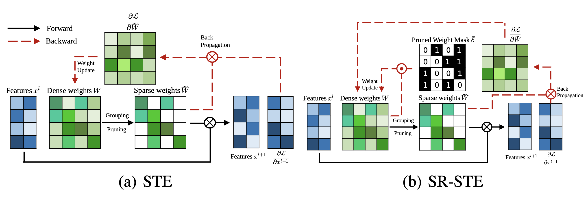
与 STE 或 SR-STE 不同，Top-KAST（Jayakumar et al. 2021）方法可以在训练的前向和反向传递中始终保持恒定的稀疏度，而不需要使用稠密参数或稠密梯度的前向传递。
在一个训练步骤 t 中，Top-KAST 的处理过程如下：
- 稀疏前向传递：选择每层中幅度最大的 top-K 参数子集 A^t \subset \Theta，限制在权重总量的 top D 比例。参数化 \alpha^t 在时刻 t 中，如果不在 A^t（活跃权重）中，则参数被置零。
其中 \text{TopK}(\theta, x) 根据幅度从 \theta 中选择了 top x 比例的权重。
- 稀疏反向传递：然后将梯度应用于更大的参数子集 B \subset \Theta，其中 B 包含 (D+M) 比例的权重和 A \subset B。更新更大比例的权重能够更有效地探索不同的剪枝掩码，从而更有可能在 top D 比例的活跃权重中产生置换。
训练分为两个阶段，集合 B \setminus A 中的额外坐标控制引入的探索量。探索量预期在训练过程中逐渐减少，最终掩码趋于稳定。
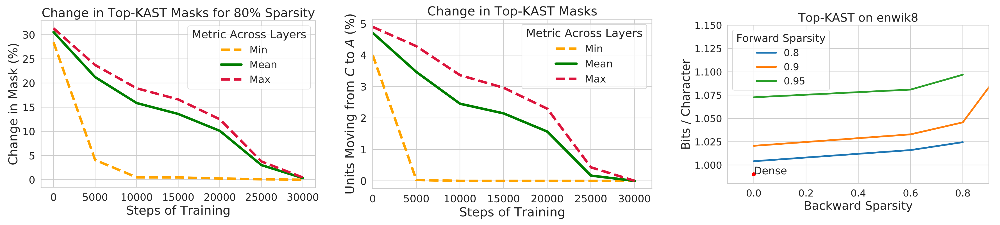
为了防止“富者更富”现象，Top-KAST 通过 L2 正则化损失对活跃权重的幅度进行惩罚，以鼓励对新项目的更多探索。B \setminus A 中的参数比 A 受到更多惩罚，从而在更新时具有更高的选择门槛以稳定掩码。
稀疏化 Transformer
Scaling Transformer（Jaszczur et al. 2021）对 Transformer 架构中的自注意力和 FFN 层都进行了稀疏化，实现了单样本推理 37 倍的加速。
稀疏 FFN 层：每个 FFN 层包含 2 个 MLP 和中间一个 ReLU。由于 ReLU 会引入大量零，他们在激活上实现了一种固定结构，以强制每个 N 个元素的块中只有一个非零值。稀疏模式是动态的，每个 token 不同。
其中 Y_\text{sparse} 中的每个激活对应 W_1 中的一列和 W_2 中的一行。控制器实现为一个低秩瓶颈稠密层，即 C_1 \in \mathbb{R}^{d_\text{model} \times d_\text{lowrank}}, C_2 \in \mathbb{R}^{d_\text{lowrank} \times d_\text{ff}} 和 d_\text{lowrank} = d_\text{model} / N。它在推理时使用 \arg\max 来选择哪些列应为非零，在训练时使用 Gumbel-softmax 技巧（Jang et al. 2016）。因为我们可以在加载 FFN 权重矩阵之前计算 \text{Controller}(x)，所以知道哪些列将被置零，从而选择不将其加载到内存中以加速推理。
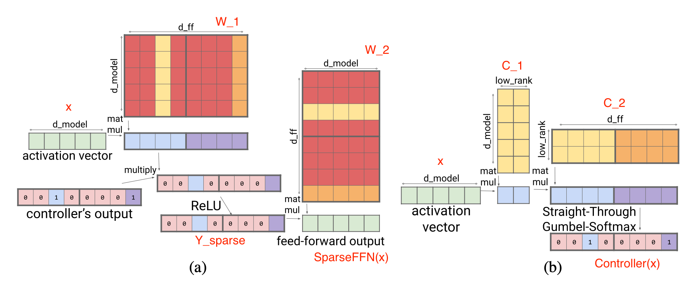
稀疏 QKV（注意力）层：在注意力层中，维度 d_\text{model} 被分成 S 个模块，每个大小为 M=d_\text{model} /S。为了确保每个子划分都能访问嵌入的任意部分，Scaling Transformer 引入了一个乘法层（即一个将来自多个神经网络层的输入逐元素相乘的层），它可以表示任意置换，但参数比稠密层少。
给定输入向量 x \in \mathbb{R}^{d_\text{model}}，乘法层的输出为 y \in \mathbb{R}^{S \times M}：
乘法层的输出是一个大小为 \in \mathbb{R}^{\text{batch size}\times \text{length} \times S \times M} 的张量。然后它被一个二维卷积层处理，其中 \text{length} 和 S 被视为图像的高和宽。这种卷积层进一步减少了注意力层的参数量和计算时间。
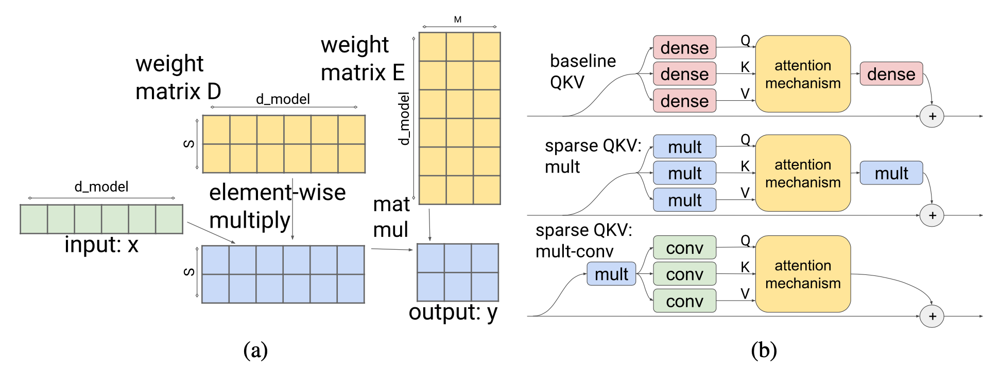
为了更好地处理长序列，Scaling Transformer 进一步配备了来自Transformer 家族 2.0 版的 LSH（locality-sensitive hashing）注意力（Kitaev, et al. 2020）以及 FFN 块循环，最终形成 Terraformer。
专家混合模型
混合专家（MoE）模型依赖于一组“专家”网络，每个样本仅激活其中一个子集来进行预测。这个想法可以追溯到 20 世纪 90 年代（Jacobs et al. 1991），并且与集成方法密切相关。关于如何将 MoE 模块融入 Transformer 的细节，请查阅我的以及 Fedus et al. 2022 关于 MoE 的综述论文。如何在多个 GPU 上训练超大规模模型？
采用 MoE 架构后，解码时仅使用部分参数，因此节省了推理成本。每个专家的容量可以通过超参数 capacity factor C 进行调整，专家容量定义为：
其中每个 token 选择 top-k 个专家。更大的 C 会带来更高的专家容量和更好的性能，但计算成本也更高。当 C>1 时，会增加 slack 容量；否则，当 C<1 时，路由网络需要忽略一些 token。
路由策略改进
MoE 层有一个路由网络，为每个输入 token 分配一部分专家。 vanilla MoE 模型中的路由策略是按照自然顺序为每个 token 路由到其偏好的专家。如果一个 token 被路由到已达到容量限制的专家，则该 token 会被标记为“溢出”并被跳过。
V-MoE（Vision MoE；Riquelme et al. 2021）将 MoE 层加入 ViT（Vision Transformer）。它在仅需一半推理计算量的情况下达到了之前 SoTA 的性能。V-MoE 可扩展至 150 亿参数。其实验使用了 k=2、32 个专家以及 every-2 expert placement（即每隔一层放置 MoE）。
由于每个专家都有容量限制，如果一些重要且信息丰富的 token 在预定义序列顺序中出现得太晚（例如句子中单词的顺序，或图像 patch 的顺序），它们可能不得不被丢弃。为了避免 vanilla 路由方案的这一缺点，V-MoE 采用 BPR（Batch Priority Routing），优先为具有高优先级得分的 token 分配专家。BPR 在专家分配前为每个 token 计算优先级得分（top-k 个路由得分的 max 或 sum），并相应地改变 token 顺序。这保证了专家容量缓冲区会优先被关键 token 填满。
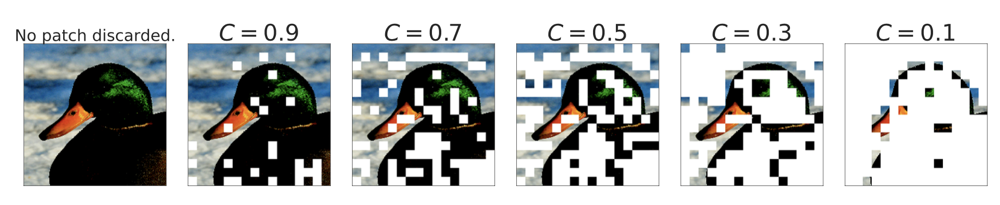
当 C\leq 0.5 时（模型开始丢弃大量 token），BPR 远优于 vanilla 路由。它使模型即使在相当低的容量下也能与稠密网络竞争。
在研究如何解释图像类别与专家的关联时，他们观察到早期的 MoE 层更通用，而后期的 MoE 层可能专精于少数图像类别。
Task MoE（Task-level Mixture-of-Experts；Kudugunta et al. 2021）将任务信息纳入考虑，在机器翻译中以任务级别而非单词或 token 级别进行路由。他们以 MNMT（多语言神经机器翻译）为例，根据目标语言或语言对对翻译任务进行分组。
Token 级别路由是动态的，每个 token 的路由决策是独立做出的。因此在推理时，服务器需要预加载所有专家。相比之下，任务级别路由在给定固定任务时是静态的，因此一个任务的推理服务器只需预加载 k 个专家（假设使用 top-k 路由）。根据他们的实验，Task MoE 与 token MoE 相比稠密模型基准能获得相似的性能提升，同时峰值吞吐量提高 2.6 倍，解码器大小仅为原来的 1.6%。
任务级别 MoE 本质上是根据预定义的启发式方法对任务分布进行分类，并将这种人类知识融入路由器。当不存在这样的启发式方法时（例如考虑通用的句子续写任务），如何利用 Task MoE 就不那么直接了。
PR-MoE（Pyramid residual MoE；Rajbhandari et al. 2022）让每个 token 通过一个固定的 MLP 和一个选定的专家。由于观察到后期层的 MoE 收益更大，PR-MoE 在后期层采用更多专家。DeepSpeed 库实现了一种灵活的多专家、多数据并行，以支持在不同层使用不同数量专家的 PR-MoE 训练。

内核改进
专家网络可以托管在不同设备上。然而，当 GPU 数量增加时，每个 GPU 上的专家数量减少，而专家之间的通信（“All-to-all”）会变得更加昂贵。跨多个 GPU 的专家之间的 All-to-all 通信依赖于 NCCL 的 P2P API，在大规模下无法充分利用高速链路（例如 NVLink、HDR InfiniBand）的带宽，因为随着节点增多，单个数据块会变小。现有的 all-to-all 算法在具有小 workload 的大规模场景下表现不佳。有各种内核改进来实现更高效的 MoE 计算，例如使 all-to-all 通信更廉价或更快。
DeepSpeed 库（Rajbhandari et al. 2022）和 TUTEL（Hwang et al. 2022）都实现了一种基于树的层次化 all-to-all 算法，它先执行节点内 all-to-all，再执行节点间 all-to-all。它将通信跳数从 O(G) 减少到 O(G_\text{node} + G / G_\text{node})，其中 G 是 GPU 节点总数，G_\text{node} 是每个节点的 GPU 核心数。虽然这种实现使通信量翻倍，但它在小 batch 大规模场景下实现了更好的扩展，因为瓶颈在于延迟而非通信带宽。
DynaMoE（Kossmann et al. 2022）使用动态重编译来根据专家之间的动态 workload 调整计算资源。RECOMPILE 机制从零编译计算图，并且仅在需要时重新分配资源。它测量分配给每个专家的样本数量，并动态调整它们的 capacity factor C，以减少运行时的内存和计算需求。基于样本-专家分配在训练早期就收敛的观察，在收敛后引入样本分配缓存，然后使用 RECOMPILE 来消除门控网络与专家之间的依赖。
架构优化
关于高效 Transformer 的综述论文（Tay et al. 2020）回顾了一系列新的 Transformer 架构，这些架构在计算和内存效率上有所改进。强烈推荐阅读。你也可以查看我的文章Transformer 家族 2.0 版，其中深入介绍了各种 Transformer 架构改进，包括使模型运行成本更低的改动。
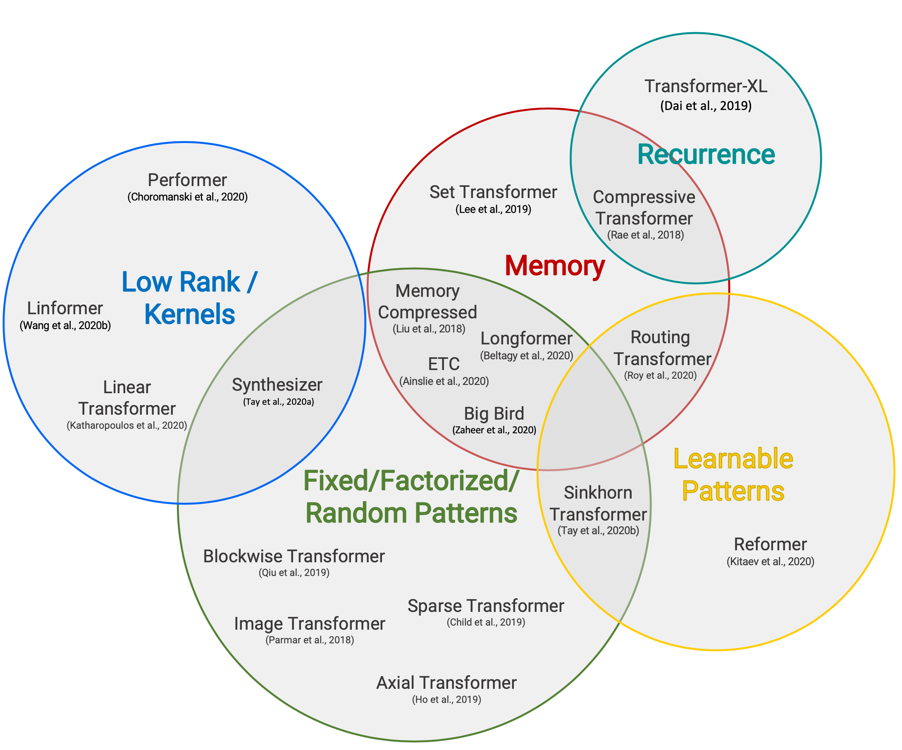
由于自注意力机制具有二次的时间和内存复杂度，这是提升 Transformer 解码效率的主要瓶颈，所有高效 Transformer 模型都对原本稠密的注意力层应用了某种形式的稀疏。这里仅列出高层级概述，其中一些来自Tay et al. 2020。
稀疏注意力模式
- Fixed Patterns limit the field of view for the attention matrix, using predefined, fixed patterns. Chunk input sequences into fixed blocks, such as Transformer 家族 2.0 版; Transformer 家族 2.0 版 uses local attention; Transformer 家族 2.0 版 uses strided attention patterns.
- Combined Patterns learn to sort/cluster the input tokens - enabling a more optimal global view of the sequence while maintaining the efficiency benefits of fixed patterns. Transformer 家族 2.0 版 combines strided and local attention; Given a high dimensional input tensor, instead of applying attention to the flattened version of the input, Axial Transformer applies multiple attentions, each along a single axis of the input tensor. Transformer 家族 2.0 版 combines local and global context, as well as strided or random attention.
- Learnable Patterns identify the optimal attention pattern via learning. Transformer 家族 2.0 版 clusters tokens into clusters based on hash-based similarity (LSH); Transformer 家族 2.0 版 runs k-means clustering on tokens; Sinkhorn Sorting Network learns to sort blocks of input sequence.
循环机制
循环机制通过循环连接多个块/片段。
- Transformer 家族 2.0 版 通过在片段之间复用隐藏状态来利用更长的上下文。
- Transformer 家族 2.0 版 将自注意力与 RNN 中的循环机制结合。
- Transformer 家族 2.0 版 是 Transformer-XL 的扩展，增加了额外内存，包含一组用于过去激活的内存槽和用于压缩激活的压缩内存槽。每当模型接受新的输入片段时，主内存中最旧的激活会被移动到压缩内存，并应用压缩函数。
节省内存的设计
节省内存的设计是指通过改变架构来使用更少的内存。
- Transformer 家族 2.0 版 将 key 和 value 的长度维度投影到低维表示（N \to k），从而将内存复杂度从 N \times N 降低到 N \times k。
- Shazeer (2019) 提出了 multi-query attention，让不同注意力“head”共享 key 和 value，大幅减少这些张量的大小和内存成本。
- Transformer 家族 2.0 版 使用核方法实现自注意力机制更廉价的数学形式。
自适应注意力
自适应注意力使模型能够学习最优注意力跨度，或决定对不同输入 token 何时进行提前退出。
- Transformer 家族 2.0 版 通过 token 与其他 key 之间的软掩码，训练模型为每个 head 的每个 token 学习最优注意力跨度。
- Transformer 家族 2.0 版 引入循环机制，并使用Transformer 家族 来动态决定循环步数。
- Transformer 家族 2.0 版 使用置信度度量来学习每个 token 何时提前退出计算层，从而在性能和效率之间取得良好平衡。
引用
引用格式：
Weng, Lilian. (Jan 2023). Large Transformer Model Inference Optimization. Lil’Log. https://lilianweng.github.io/posts/2023-01-10-inference-optimization/.
@article{weng2023inference,
title = "Large Transformer Model Inference Optimization",
author = "Weng, Lilian",
journal = "Lil'Log",
year = "2023",
month = "Jan",
url = "https://lilianweng.github.io/posts/2023-01-10-inference-optimization/"
}
参考文献
[1] Bondarenko et al. “Understanding and overcoming the challenges of efficient transformer quantization” ACL 2021.
[2] Dettmers et al. “LLM.int8(): 8-bit Matrix Multiplication for Transformers at Scale” NeuriPS 2022
[3] Zadeh et al. “Gobo: Quantizing attention-based NLP models for low latency and energy efficient inference.” MICRO 2020
[4] Shen, Dong & Ye, et al. “Q-BERT: Hessian based ultra low precision quantization of BERT” AAAI 2020.
[5] Yao et al. “ZeroQuant: Efficient and affordable post-training quantization for large-scale transformers” arXiv preprint arXiv:2206.01861 (2022).
[6] Frantar et al. “GPTQ: Accurate Quantization for Generative Pre-trained Transformers” arXiv preprint arXiv:2210.17323 (2022).
[7] Xiao & Lin “SmoothQuant: Accelerated sparse neural training: A provable and efficient method to find N:M transposable masks.” arXiv preprint arXiv:2211.10438 (2022). | code
[8] Pool & Yu. “Channel Permutations for N:M Sparsity.” NeuriPS 2021. | code
[9] Zhou & Ma, et al. “Learning N:M fine-grained structured sparse neural networks from scratch.” arXiv preprint arXiv:2102.04010 (2021).
[10] Jayakumar et al. “Top-KAST: Top-K Always Sparse Training.” NeuriPS 2020.
[11] Nvidia. “Nvidia A100 tensor core GPU architecture.” 2020.
[12] Gale, Elsen & Hooker “The State of Sparsity in Deep Neural Networks.” arXiv preprint arXiv:1902.09574 (2019).
[13] Zhu & Gupta. “To Prune, or Not to Prune: Exploring the Efficacy of Pruning for Model Compression.” arXiv preprint arXiv:1710.01878 (2017).
[14] Renda et al. “Comparing rewinding and fine-tuning in neural network pruning.” arXiv preprint arXiv:2003.02389 (2020).
[15] Zhou & Ma, et al. “Learning N:M fine-grained structured sparse neural networks from scratch.” arXiv preprint arXiv:2102.04010 (2021).
[16] Pool & Yu. “Channel Permutations for N:M Sparsity.” NeuriPS 2021. | code
[17] Jaszczur et al. “Sparse is Enough in Scaling Transformers.” NeuriPS 2021.
[18] Mishra et al. “An Survey of Neural Network Compression.” arXiv preprint arXiv:1710.09282 (2017).
[19] Fedus et al. “A Review of Sparse Expert Models in Deep Learning.” arXiv preprint arXiv:2209.01667 (2022)..
[20] Riquelme et al. “Scaling vision with sparse mixture of experts.” NeuriPS 2021.
[21] Kudugunta et al. “Beyond Distillation: Task-level Mixture-of-Experts for Efficient Inference.” arXiv preprint arXiv:2110.03742 (2021).
[22] Rajbhandari et al. “DeepSpeed-MoE: Advancing mixture-of-experts inference and training to power next-generation ai scale.” arXiv preprint arXiv:2201.05596 (2022).
[23] Kossmann et al. “Optimizing mixture of experts using dynamic recompilations.” arXiv preprint arXiv:2205.01848 (2022).
[24] Hwang et al. “Tutel: Adaptive mixture-of-experts at scale.” arXiv preprint arXiv:2206.03382 (2022). | code
[25] Noam Shazeer. “Fast Transformer Decoding: One Write-Head is All You Need.” arXiv preprint arXiv:1911.02150 (2019).
[26] Tay et al. “Efficient Transformers: A Survey.” ACM Computing Surveys 55.6 (2022): 1-28.
[27] Pope et al. “Efficiently Scaling Transformer Inference.” arXiv preprint arXiv:2211.05102 (2022).
[28] Frankle & Carbin. “The Lottery Ticket Hypothesis: Finding Sparse, Trainable Neural Networks” ICLR 2019.
[29] Elabyad et al. “Depth-Adaptive Transformer” ICLR 2020.
[30] Schuster et al. “Confident Adaptive Language Modeling” arXiv preprint arXiv:2207.07061 (2022).
[31] Gou et al. “https://arxiv.org/abs/2006.05525” arXiv preprint arXiv:2006.05525 (2020).
[32] Hinton et al. “Distilling the Knowledge in a Neural Network” NIPS 2014.
[33] Sanh et al. “DistilBERT, a distilled version of BERT: smaller, faster, cheaper and lighter” Workshop on Energy Efficient Machine Learning and Cognitive Computing @ NeuriPS 2019.